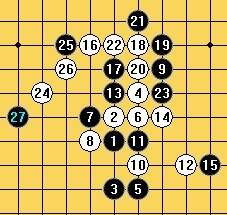

论五子棋比赛心理战（穿插典例分析）
#1 论五子棋比赛心理战（穿插典例分析） 作者：小丸.net 发表时间：2009-12-26 3:04:32
（编者按：本文出自深夜，所有棋谱文字经求证基本无误，阅读此文后感觉定要与大家分享一下，文中提及的各点，达人们可以多学习一下，也许，在您打算参加和准备参加五子棋比赛前的赛前准备真的有帮助。）
论五子棋比赛心理战（穿插典例分析）
——此文赠给所有热爱五子棋并参加或打算参加实战的棋手们
沈瓒（Solmyr）
前些日子看到戴晓涵小品式文章《献给五子棋爱好者》中有一个心理学派，想到作为一个下棋有一段时间的实战棋手，我承认并没有强大的计算力和完美的棋感，而更偏向于赛前准备和比赛心理的研究，我想是实话把我的一些想法拿出来与大家共同分析了，当然我下棋的时间比起很多朋友还是相当少的，希望大家能给出一些批判性意见。
请大家记住一句话：赛场下再好的朋友，在赛场上也是死敌！
下面我就五子棋实战分类分析：
一、赛前心理战分析：
1、变化的拆解与保留（看似简单的，往往是被忽略的；对于实战准备使用的变化一定要拆解的完善，做好一切对手变招的准备！）
首先要讲的就是变化的拆解，很多五子棋爱好者们不重视基础，认为凡是黑必胜或者大优的变化都不值得一看，其实实战中失误的往往就是这一块。在这里，我们就吴镝与段然的全团赛实战对局做一个分析，这也是以下很多心理战方面可以分析的典例。
（吴镝执黑胜段然，到21为实战变化，22是黑21的唯一防，实战结果段然未走出22手而告负。）
实战的时候吴镝按照印象和棋感正确地走到了19，当段然拍下20的时候却完全想不起了。
这个浦月二打变化是赛前河北队教练五子棋战术大师李睿凡提供的，记得当时段然意气风发的说要考吴镝浦月，结果还真考中了，这路变化黑是唯一杀，而其他的进攻则有强防。
然后错就错在变化是在比赛前才告诉段然的，给的太仓促！以至于段然没有时间去把这个变化拆解完善！而自信满满的以为自己能防住（当然其中还有其他心里因素导致了比赛结果的产生，我们下文慢慢来分析）。这才疏漏了黑棋21的强势进攻，更疏漏了22这手相当诡异的唯一防。
通过以上例子，我们发现，如果实战比赛需要使用一个变化，那必须将这个变化拆解完善，比如对手的强攻之后的应对手段或者对手弱防之后的杀法……
至于实战变化的保留，我这里只做一小点的说明：如果想用某个变化，那么一定不能露出这个变化。你可以小小的套一下对手对这个变化是否熟悉（比方说平时下棋考对方某个相似棋型，或者干脆某些时候跟对手说某个变化“简单得一塌糊涂”，当然我说的有些夸张），但是绝对不能让对手得知你最近正在拆解某个变化或者干脆被对手发现你想对他使用某个变化。这样必然导致实战的崩溃！
2、如果要考对手变化，此变化不宜为最强变化。
我们先稍微思考一下，如果一个人知道某个变化，或者一个人被告知了某个变化，再或者一个人拥有一份别人给的完整的某开局的地毯铺而没有完整的二次拆解，那么他一般知道的背下来的往往是最强变化或者杀法，而那些稍微弱一些的点呢？大多比较复杂但是相对较弱的点都是被忽视掉的。
我们再来看08全团赛上的一盘实战，来证明相对弱的变化的受忽略程度：

（曹冬执黑胜陈新，后续变化不详，黑棋没有走最强变化，最后陈新在时间紧迫的情况下错误的抓了曹冬一个四三）
在这局中，瑞星的这个15已经被拆解出是白必胜，只是当时还属于绝密变化，没有公开（可见变化保留的重要性！）。而在大家的普遍认识中，这个15手的变化仅仅是白有一定优势的可下局面，曹冬本人就在世界团体赛上多次执黑使用这个15的变化。陈新，以为非常执着的棋手，也是著名的背谱达人，凡是知道必胜的谱他一定要记得。
当时陈新是背熟了这路变化的最强21的完整杀法，就等着曹冬往那里走了，可惜由于曹冬没有接触过这路变化而仅仅只是选择了一个强防而非最强防，陈新很郁闷地没有走出正确杀法，而拼到了比赛的拍表时刻，最后由于时间紧迫，陈新错误地抓了曹冬四三。
可见，大多数人都是背下了最强变化而忽略了较弱的变化，陈新和曹冬实战的例子就相当于曹冬考了陈新一个相对弱的变化而陈新没有杀下来。因此，我们在选择实战变化的时候最好抛弃最强变化而使用一些相对弱但是却不那么好杀的变化。
3、研究对手以往对局，抓住对手弱点，避开对手优点。
对于对手以往对局的研究至关重要，因为以往的实战谱是最容易反映出对手优缺点的法宝。假设你对一个棋手很熟悉，而他却对你一无所知，比赛时对手开局，那么我们猜想一下他会开什么局？很明显最有可能出现的开局就是对手最熟悉的开局，那么怎么判断哪个开局时对手
#2 Re:论五子棋比赛心理战（穿插典例分析） 作者：流浪者的梦 发表时间：2009-12-26 3:35:41
 费了半天才看完，的确很强大！！！
费了半天才看完，的确很强大！！！
#3 Re:论五子棋比赛心理战（穿插典例分析） 作者：极地剑客 发表时间：2009-12-26 5:40:34
早起精神好~路过看帖~
#4 Re:论五子棋比赛心理战（穿插典例分析） 作者：裁决殿雪月 发表时间：2009-12-26 8:21:36
看完了
沈瓒好贴哈
#5 Re:论五子棋比赛心理战（穿插典例分析） 作者：26 发表时间：2009-12-26 13:02:36
强大的沈瓒#6 Re:论五子棋比赛心理战（穿插典例分析） 作者：小帮帮 发表时间：2009-12-26 13:54:33
写得蛮不错的，好在我一无所知，所以对手对我更加一无所知
#7 Re:论五子棋比赛心理战（穿插典例分析） 作者：浪人痴痴 发表时间：2009-12-26 17:00:37
有错别字。。。。。我看到了。。。。。
清缘吧。。。。。
#8 Re:论五子棋比赛心理战（穿插典例分析） 作者：路痴 发表时间：2009-12-26 17:02:08
威望和鲜花都给丸子了。。。沈妞亏了 哈哈
#9 Re:论五子棋比赛心理战（穿插典例分析） 作者：怪 发表时间：2009-12-26 17:24:09
对这名字好像有点耳熟，是mm？#10 Re:论五子棋比赛心理战（穿插典例分析） 作者：岑小鱼 发表时间：2009-12-26 17:25:30
心理状态是实力组成的重要一部分
#11 Re:论五子棋比赛心理战（穿插典例分析） 作者：屏蔽 发表时间：2009-12-26 20:47:44
黄金贤对仇云飞那盘最后有反，应该棋谱有误。#12 Re:论五子棋比赛心理战（穿插典例分析） 作者：水月 发表时间：2009-12-27 0:54:37
赞～学到了～#13 Re:论五子棋比赛心理战（穿插典例分析） 作者：怪 发表时间：2009-12-27 11:19:35
其实穿插美女图片更提神
#14 Re:论五子棋比赛心理战（穿插典例分析） 作者：我就不信注册不上 发表时间：2009-12-27 13:34:27
看开头的时候，吓我一跳，“弱防”、“盘外招”等等，似乎给人一种错觉。不过还好，最后一句话终于说了回来“当然，心里战只是一种实战的应用罢了，计算是基础，棋感（棋型）是计算辅助，心理战是实战的策略，这三者中当然还是计算最主要！因此，我在此奉劝广大五子棋爱好者们练好计算，打好黑必胜开局的基础！”。如果没有这句话，本文就不值得一读了
#15 Re:论五子棋比赛心理战（穿插典例分析） 作者：有志青年 发表时间：2009-12-27 15:06:05
难得一见的好文！#16 Re:论五子棋比赛心理战（穿插典例分析） 作者：第五象限 发表时间：2009-12-27 15:46:01
挺有意思！#17 Re:论五子棋比赛心理战（穿插典例分析） 作者：堂堂 发表时间：2009-12-27 16:42:41
 写的很不错，支持一下
写的很不错，支持一下
#18 Re:论五子棋比赛心理战（穿插典例分析） 作者：weigui 发表时间：2009-12-27 19:36:20
悲哀，也许这就是五子棋不被认可的原因。
棋本中庸，但在名利面前却被传播着不符合棋道的所谓经验。
棋是为社会服务的，不知道各位是不是想过这样的问题，问下自己为什么下棋？
#19 Re:Re:论五子棋比赛心理战（穿插典例分析） 作者：浪人痴痴 发表时间：2009-12-27 21:57:18
引用：
原文由 weigui 发表于 2009-12-27 19:36:20 :悲哀，也许这就是五子棋不被认可的原因。
棋本中庸，但在名利面前却被传播着不符合棋道的所谓经验。
棋是为社会服务的，不知道各位是不是想过这样的问题，问下自己为什么下棋？
习惯。。。仅仅只是一种习惯。。。。
每天习惯的打开电脑，习惯的打QQ游戏。。
习惯的坐在那里等人下棋。。。
为什么下棋呢？
仅仅只是一种习惯。。。。
#20 Re:论五子棋比赛心理战（穿插典例分析） 作者：堇色 发表时间：2009-12-27 23:31:03
沈瓒这篇文章本身写的不错 属于实战技术类的范畴吧
对伟鬼老师的话也深有同感 这次参加智运会和我们省的国跳队在一节车厢 其中王俊生老师在和我们交流五子棋的时候问我们一个问题，就是如果五子棋到中盘以后如何取胜，当时我随口解释了一下依靠一些骗杀是常用的手段，王老师当时笑着说，原来五子棋是靠骗的啊。当时我纠正了自己的说法，讲骗杀（在没有必胜的情况下试探性的设置一些陷阱攻击对手)只是一个手段，但是同时也认识到自己对五子棋理论和文化认识上的欠缺。我想这不仅是我一个人面临的问题。
说个人的感觉 五子棋的普及工作做的不是很理想 没有一个棋文化 这个棋很难得到认同
五子棋目前就是这样 尽管比赛在技术层面上已经有了长足的进步 但是这能代表什么呢？为什么下棋 五子棋的棋道究竟是什么？
我曾私下里给一个棋友讲，现在的五子棋比赛水平是高了，但是高的变了味。比赛的人不管是哪种风格哪种流派，如果想拿成绩，就需要自己花费大量的时间来记谱，花费大量的精力来拆棋，以期待比赛能用上。我不否认这些练习是必须的，但这是否有违下棋的初衷？如果说初学者学习定式是为了学习提高打基础，那当实力已经超过这些基础的时候，却不得不为了应付可能出现的情况而去记那些海量的谱。在没有职业化五子棋的今天，参加比赛的一半情况，其实就是在考试，更多的时候不是怎么下的问题，而是会不会的问题。
#21 Re:论五子棋比赛心理战（穿插典例分析） 作者：17号蓝星仔 发表时间：2009-12-30 11:58:54
文章和评论都很经典~~
#22 Re:论五子棋比赛心理战（穿插典例分析） 作者：岑小鱼 发表时间：2010-6-20 13:54:02
引用：
原文由 小丸.net 发表于 2009-12-26 3:04:32 :（编者按：本文出自深夜，所有棋谱文字经求证基本无误，阅读此文后感觉定要与大家分享一下，文中提及的各点，达人们可以多学习一下，也许，在您打算参加和准备参加五子棋比赛前的赛前准备真的有帮助。）
论五子棋比赛心理战（穿插典例分析）
——此文赠给所有热爱五子棋并参加或打算参加实战的棋手们
沈瓒（Solmyr）
1、典例分析
可以说09年全国赛仇云飞对黄金贤的对局是陷阱设置的最经典体现，可以说这次比赛中招的是仇云飞，如果曹冬参加了比赛，对上了黄金贤，那么中招的就极有可能是曹冬。
我们先来看一下这盘实战对局，再对连环计做具体阐述：
（黄金贤执黑胜仇云飞，棋谱完整，仇云飞中研究的一轮，黄金贤虽然没有强攻得手，但最终还是捡了云飞忽略的VCF杀了）最近的新闻过于无聊 翻了下老帖子 忽然发现（上次看的时候没仔细）楼主说黑胜的这局怎么看都是白必胜？求真相....
#23 Re:论五子棋比赛心理战（穿插典例分析） 作者：中中 发表时间：2010-6-21 14:19:17
比赛心理...好遥远啊
#24 Re:论五子棋比赛心理战（穿插典例分析） 作者：春树暮云 发表时间：2010-6-23 14:31:52
作者沈瓒是谁呢 哪里人 有参与哪些全国赛事呢？
谁能介绍一下？
#25 Re:论五子棋比赛心理战（穿插典例分析） 作者：黄药师 发表时间：2010-6-23 15:31:10
吴镝在实战的时候总是是不是地对着对手发出一个非常诡异的微笑……

#26 Re:论五子棋比赛心理战（穿插典例分析） 作者：慕容晓文 发表时间：2010-7-4 10:39:06
很可惜，其中有些案例不属实，希望作者能把所有对局的出处验证一遍#27 Re:Re:论五子棋比赛心理战（穿插典例分析） 作者：岑小鱼 发表时间：2010-7-4 12:01:32
引用：
原文由 慕容晓文 发表于 2010-7-4 10:39:06 :
很可惜，其中有些案例不属实，希望作者能把所有对局的出处验证一遍确实 除了上面明显的例子之外 其实最后一图所谓的骗这么复杂的杀法也不现实 因为黑有简单胜...但作者既然说是骗..也不好反驳而已